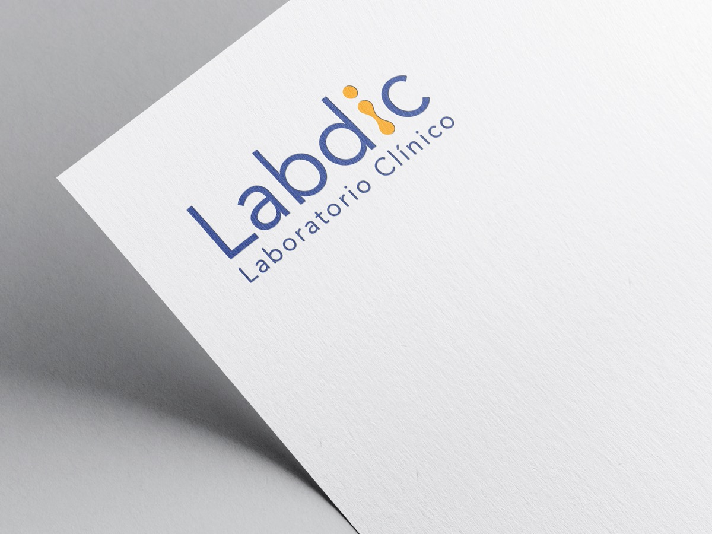
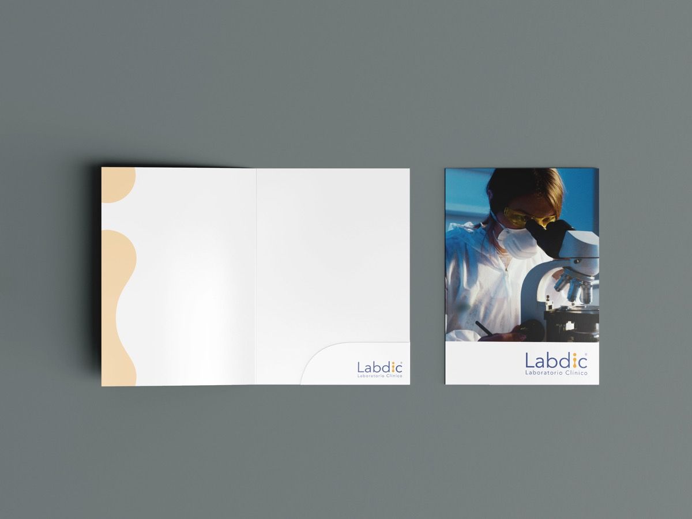
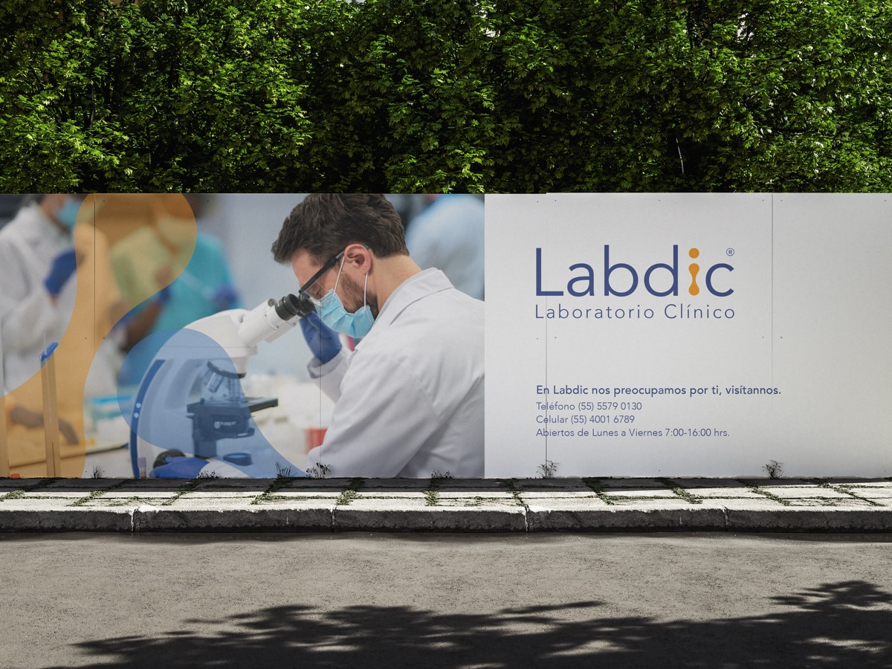
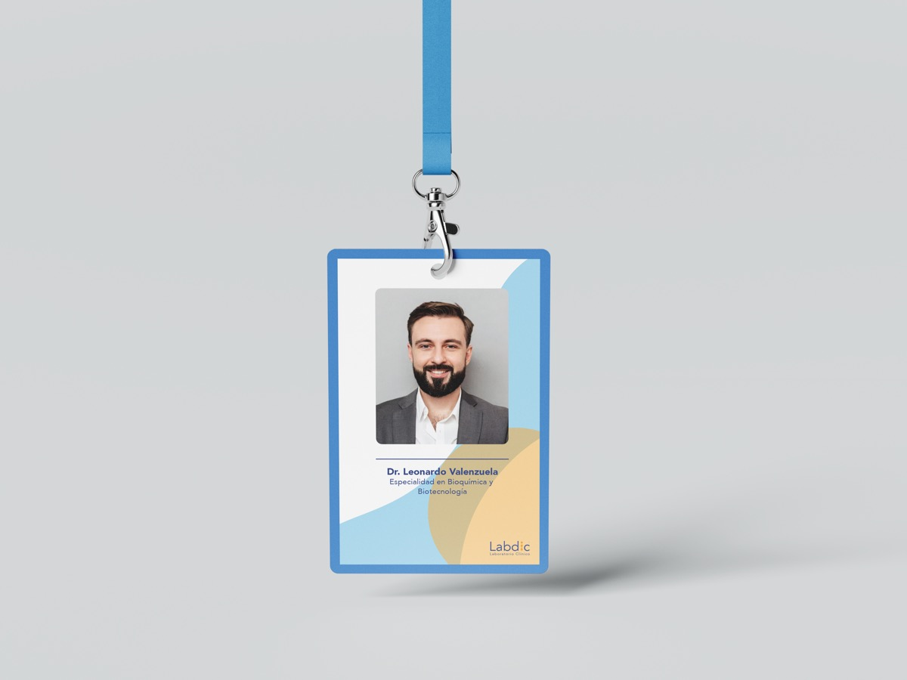
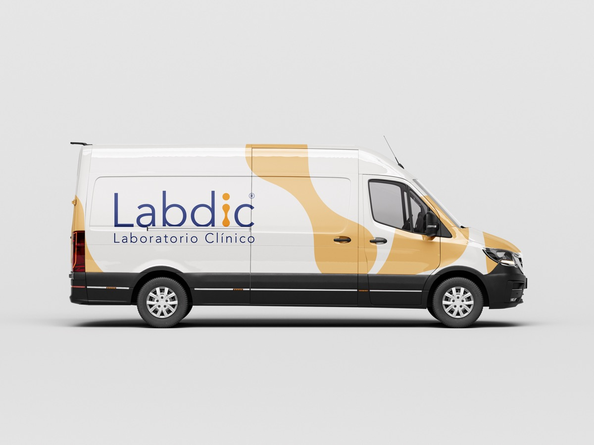
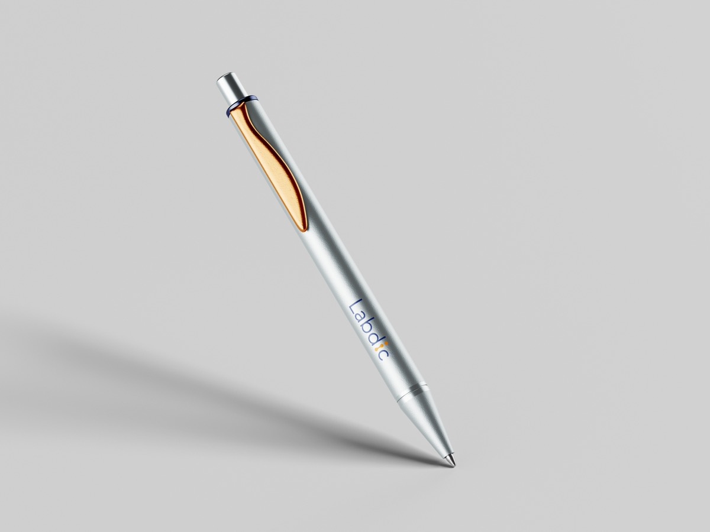
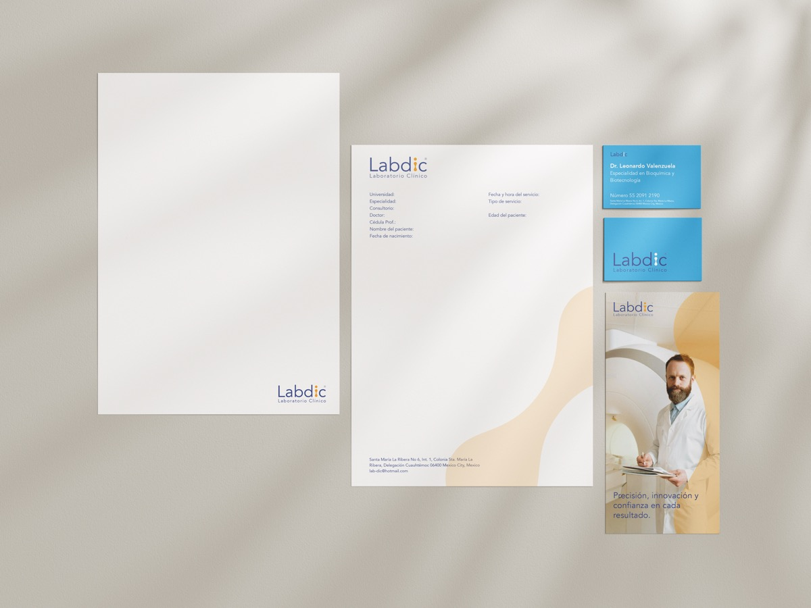
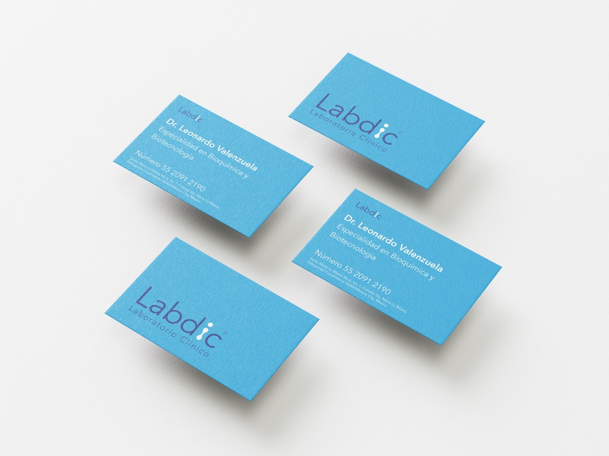

Proyecto
Rediseño Laboratorio LABDIC
En este rediseño seleccioné un laboratorio y se le creó una nueva imagen para posicionarlo en el mercado. Además se hicieron aplicaciones realistas, para la marca se realizó un Brand Book, se adjunta link.
Galería
Imágenes del proyecto







